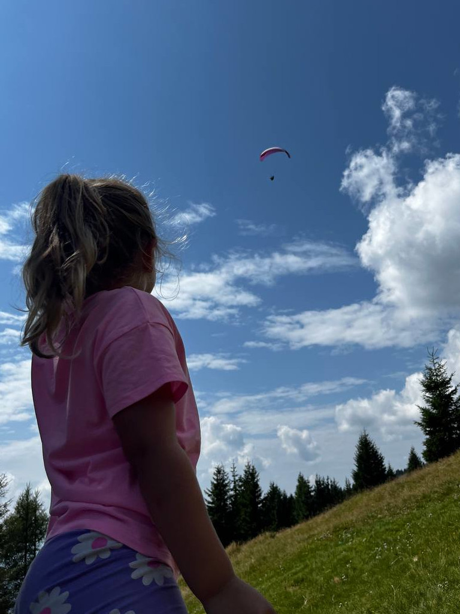
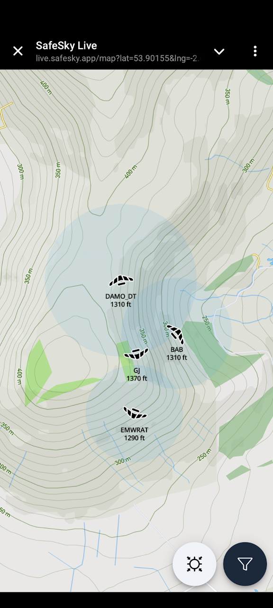

Last of the summer flying
Suddenly it feels like Autumn. There are still a few XC’s being flown but the leaves are starting to turn and this will be the last regular monthly newsletter until next season. We’ll drop to just a couple of issues through the winter and hope to pack them full of frosty flying pics before it’s spring thermal warnings time all over again.
Thanks as always for your contributions. We’ve got tales of flying in France from Chris and Doug, advice from Brian on how to cope with flyable days when you can’t get out to fly, plus a top notch gallery. Cover picture was a tough choice this month!
Grab the best of the late season thermals and then tell us all about it by mailing editor@penninesoaringclub.org.uk.

Cover photo: Tony Gill’s daughter watching her dad in Greim, Austria
Chairman’s Chunterings
Brian Stewart, Chairman
Making the most of it.
We’ve all been here… a sudden 5-star forecast, light winds, the forums going into overdrive about the record-breaking potential. But… your mother-in-law is visiting, the cat needs worming, it’s your wedding day, etc. How to cope with that FOMO without going crazy.
We are planning a weather-forecasting presentation for the winter socials, and in our discussions I picked up on something Elliott said about following up forecasts with a look at what actually happened on the day. So I thought that sounded like a great way to get something out of what might otherwise be a lost opportunity (unless it was your wedding day…). I imagine most of us are constantly looking at the weather forecasts trying to spot the conditions for days in advance, and when it’s a day when you can’t fly, at least there’s a chance to turn it into a learning experience.
Organise your chosen forecasts: I have a browser window open with all the forecasts I use on different tabs (more on these forecasts in the social night) and refresh them as the day approaches to see how they evolve. Make a plan as if you could go flying that day; decide where you would go; set a task that would stretch you a bit; judge when you think would be a good time to launch and plan for conditions along your route. Then, on the day, go and enjoy getting married, or worming the cat, whatever, and forget about it.
Later, go and look at the XC League and XContest, see what others did – not gnashing your teeth with rage at what you missed but looking to learn from how right you were about the day. This works especially well at weekends or bank holidays when there will be plenty of data points for your research. Did people get away? When did they leave the hill? (not launch time, they may have scratched for ages before going). Did they follow your route? How successfully (don’t compare yourself with the skygods, unless you are one)? Read any stories about their flights, and if you know some of the pilots ask them how it went, how the actual conditions compared to predictions etc.
As well as learning from the exercise of reading and interpreting forecasts, which is a major art in itself, you may find it calms down that inner voice that was nagging at you to call off the wedding…
Sites
Andy Archer, Sites Officer
Lake District Military Exercises - Cumbria Soaring Club
The days are drawing in and yet again it’s time for the RAF and special invited guests to descend upon the mostly tranquil valleys and lakes of Cumbria… Ex. Cobra Warrior 24(2) runs from next Monday - 16/9/24 until 4/10/24
Cobra Warrior is a Large Force Exercise involving up to 90 military aircraft in mixed formations including Fast Jets, Intelligence, Surveillance and Reconnaissance Aircraft, Air to Air Refuelling and Mobility Assets (Fixed Wing and Rotary).
Aircraft involved will include amongst others - UK - F35B UK - Typhoon Poland - F16 Canada - F18 Canada - C130 Norway - F35A USA - F35A USA - F16 USA - F15
The first two weeks 16th-20th and 23rd-27th will see an increase in low level traffic in LFA17 (the Lake District) during daylight hours. The third week 30th-3rd the Exercise is scheduled for night flying which should not affect us free flyers. Fri 4th Oct is departure day and in previous years LFA17 usually sees heavier traffic on this day.
Please remember to get your CANPs in, the day BEFORE you plan to fly if possible, but late is better than not at all!
Civil Aircraft Notification Procedure (CANP plus NOTAMs) for paragliders & hang gliders
Winter Hill
Winter Hill Transmitter Mast is now a construction site and under the control of a contractor, this is due to replacement of the stay lines that are supporting the structure. The contractor will be managing the site from now until the 3rd of October 2024 and there will be some periods of significantly reduced access when the new stays are being lifted over and alongside the site access road, the work will also include weekend work.
During working hours the gates on site will be locked and set to a code held by the contractor, out of hours (from 6pm – 8am) the code for the gates will be set to the same code as the Winter Hill barrier at the bottom of the hill.
The site manager’s contact details will be displayed on the gate however he is very unlikely to give access during normal working hours without a permit to work or legitimate cause to drive further up the hill to reach the other masts.
As such can I ask for this period, that members avoid using the access track to Winter Hill? Instead please park in the car park on Rivington Road and walk up the front face of the hill to take off.
Arqiva the mast operators apologise for the inconvenience caused.
The Gallery


A Grand Day Out
Chris Timson - Notes from Annecy
Just got back from an amazing couple of weeks in Annecy. It was our family holiday but couldn’t resist taking the glider even if it meant leaving one of the kids behind!
Now I’m a low hours CP so planned on seeking out a bit of advice before launching, fortunately there are now people there in blue jackets to assist with conditions info and advice. It is though very busy especially being July/August so you do have to give the tandem flyers priority.
My first flight at Col de la Forclaz was very different to what I’m used to. There was hardly any wind at the launch site but the wind sock was blowing fully over the edge so lots going on! After launch you have the choice of turning left and a long glide to Doussard, an enormous landing field at the south end of the lake, or turn right and have a play. Of course I went right and was immediately up in the mountains. I was blown away by the spectacular view! This place is incredible and it really did take my breath away. I played around on the ridge for about an hour, then thought I’d better check out the landing field as I’d got a couple of weeks here to fly anyway! The landing field was pretty busy but so big that there’s plenty of room for everyone as long as you follow the landing pattern.
The following day I went to try Planfait. This is a much smaller site and a bit friendlier but not quite as high. You can even get the free bus up to launch. The shuttle bus at Doussard to Forclaz is 7 Euros but does take you right to the top. So much to explore and great for practising thermalling techniques which has been so difficult recently in the UK due to the weather. I had a couple of days where the conditions weren’t quite as good and resulted in short flights but this was probably down to my lack of experience. On good days I could easily find lift anywhere. This is an amazing place to fly even for low airtime pilots as long as you use a bit of common sense and talk to people, check the weather thoroughly, and if no one is flying there’s a reason. Can’t wait to go back next year!


Photo Diary
Doug Neil at the 2024 British HG Nationals in Laragne
I made my first trip to the British Hang Gliding Nationals in mid August. It was super hot in the south of France when we arrived. Competition base was at the campsite in Laragne-Monteglin where we were staying in our campervan. The competition includes a Sports Class for kingposted gliders and I entered with my fairly new Avian Puma. I wasn’t expecting to be very competitive – my previous highest altitude was about 6300ft in Algodonales, and longest (and almost only) XC was a 14km two-thermal flight from Tailbridge. I’d only ever got to the first turnpoint in a competition task so confidence about the comp was not high, but I was hoping for some decent flights regardless.
While the temperature was hot, it was also quite a windy week, and this resulted in only two taskable days. A couple of other days we travelled to the hill (mountain!) but flying was not possible.
Task 1 was a 38km route, flying from Chabre south takeoff. It was very stressful before launch in an overcrowded launch area and my phone running XCTrack overheated, turning itself off just prior to launch. I was late taking off and arrived at the start gate too low, but still higher than my previous best at 7500ft. The airflow over my phone cooled it down and I was able to turn it on and get XCTrack to run. I decided to set off around the course anyway and struggled along the ridge to Col Saint Jean passing over several areas where there was no suitable landing field – I was completely out of my comfort zone. A bit of luck gave me some lift at various points and I made it to the first turn point and returned along the ridge back towards launch and hit a powerful thermal which took me up to 10500ft above Chabre – at one point I noticed my vario reporting 19-up! The height I had guaranteed that I would reach turn point 2 (where there was a clear and easy landing field) so I flew out from the front of the ridge. The air was really lifty and I made it to TP2 still with over 8000ft and I could head onwards towards TP3 with an option to bail out at the campsite landing field if things went bad. Instead between TP2 and TP3 I hit another thermal rocketing me up to 10500ft again and left me needing less than 5:1 glide to get into goal. After tagging TP3 I made it to goal still with about 4-5000ft above the landing field and it took me over 30 mins to get down to land. I had taken well over twice the time of the task winner, but reaching goal at all was unbelievable. There were 10 pilots in the Sports Class comp, but several had been caught out in airspace at Col Saint Jean (where I had been struggling and low) so I ended up in 4th place on the day.
Task 2 was also at Chabre south takeoff; a more difficult and slightly longer task at 43km. I learned some lessons from the previous day and gained more height in the start cylinder before setting off, though I had to take the second start gate and saw several of the Sports Class gliders returning from the ridge run (about 8km ahead of me in the task) underneath me as I went over the start line. The ridge run was easy this time, and again I got a powerful thermal when I returned to the Chabre launch. The leg to TP2 was a long trip over the valley but I was fortunate to hit another thermal partway across which took me over 10000ft again and ensured I made it through TP2 and onto a large ridge at TP3. Several other Sports Class gliders didn’t make it over the valley and landed out. From the air, the ridge at TP3 looked like an epic soaring cliff, but I spent a long while and over 1000ft of height searching for lift before another great thermal took me to 10000ft again. From here it was about 9km to TP4, then just a couple more km to goal so I set off into wind with a fairly easy final glide. I again made it to goal with only 4-5000ft to spare! Another great day, and when the scores were collated it turned out that I had got 2nd place. A few pilots were unlucky and didn’t catch a thermal, as I did, while crossing the valley. Another (in second place after task 1 so was pushing hard) tried to final glide from over 20km out and missed goal by just 3 or 4 fields. I had also caught up with one or two pilots who took the first start gate so I had a 20 minute advantage over them.
Only two tasks for the competition and I ended up in 4th position, within shouting distance of 2nd and 3rd place – a third task would have been interesting if I could have learned some lessons about aiming to arrive at goal with not quite so much height to burn off. Without a doubt some of the best flying I have had on a hang glider and I am sure I will return to the comp next year.


{kind=link}
{kind=link}
{kind=link}
{kind=link}
{kind=link}
{kind=link}
Shout Outs
Congratulations to Jacob Butterworth and the British team, who took bronze at the 1st FAI Junior World Paragliding Championships in Tolmin.
{kind=link}
And bravo to Baz Roberts and Cumbria Soaring Club, who have managed to restore permission to fly at Carrock and Caldbeck Common.
{kind=link}
Competitions
Elliott Brown, Competitions Secretary
Northern Challenge Series 2024
XContest - Pennine Soaring Club

XC League
Dates For Your Diary
Winter Club Nights
Graham Jones, Social Secretary
Club nights will return as usual on the second Monday of each month throughout the winter, with the first one booked for 14th October at the Sea View Inn, Chorley. Keep an eye on Telegram for confirmation of further dates and topics.
You Might Have Missed
Following a short break for new features and bug fixes, your newsletter editor’s other paragliding project is back up and running. PG and HG Tracking Alerts is a service that sends you text messages when gliders are detected on your local hills and it now uses SafeSky to access tracking data, which means that alongside FLARM, it can see gliders using the XCTrack and SafeSky mobile apps, plus several others. If you’re running live tracking on your phone, you’ll set off alerts to help other people know where it’s flyable and if you’re on a big XC next season, subscribers will be pinged so they can tune in and watch the rest of your flight.

Your Newsletter Needs You
Appear in the next newsletter! We need submissions for…
A Grand Day Out
2-3 paragraphs describing a fun day. You’re welcome to write more if you’re feeling creative but a couple of paragraphs is plenty. Could be epic, could be daft, could be simply the first time you flew for six months. If you’ve had a good day and you took some pictures, send it in.
Why Not Visit…
A quick guide to a site that you like, at home or abroad. Tell us where it is, what it’s like to fly, any watch-outs and how to contact the locals. Attach a photo and email it over.
The Gallery
Send in any recent(ish) shots with when and where they were taken. Spectacular, silly, from the ground or from the air, it doesn’t matter. Let’s see what you’ve been up to. Videos are very welcome too but pop them on YouTube or Vimeo and send a link for the newsletter.
Shout Outs
First ever XC? Smashed a PB? Took part in a comp? Let us know and get a shout out in the newsletter. Nominate your mates if they won’t do it themselves.
Top Tips
Spotted a bargain? Got a great travel tip? Know how to make Bluetooth connections work on an iPhone? Share your best ideas.
Send submissions on these or anything else you’d like to see featured to editor@penninesoaringclub.org.uk. You can also drop them over using the web form or message Neil on Telegram.
Fly safe, see you in November.